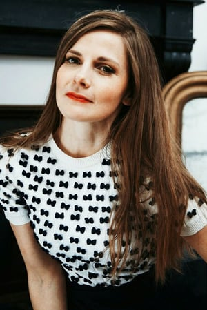
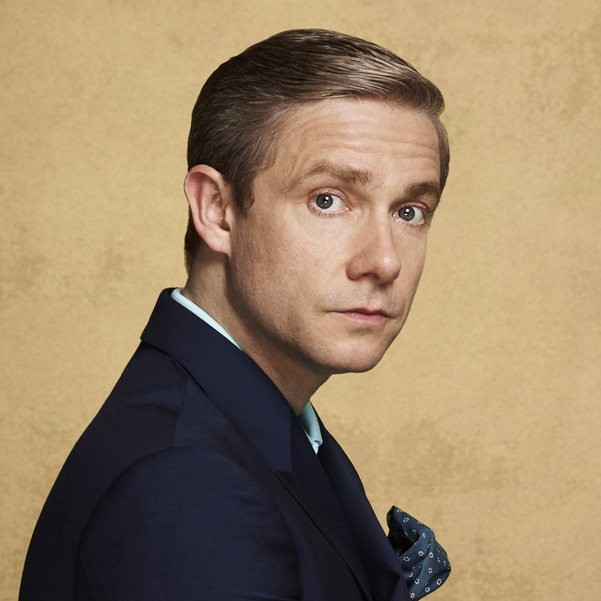

Cette adaptation libre des romans et nouvelles d'Arthur Conan Doyle présente le célèbre duo dans un contexte contemporain. En effet la série transpose l'époque dans laquelle évoluent les deux personnages de la fin du xixe siècle au xxie siècle.
Sherlock Holmes est détective consultant et il accueille comme colocataire le docteur Watson, un ancien médecin de l'armée britannique blessé en Afghanistan. Il aide Scotland Yard à résoudre des enquêtes ardues en utilisant ses dons d'observation
et de déduction associés aux technologies actuelles comme Internet ou les téléphones portables.

- Prénom: Benedict
- Nom de Famille: Cumberbatch
- Nom Complet: Benedict Timothy Carlton Cumberbatch
- Nationalité: Britannique
- Sexe: Masculin
- Date de Naissance: 19 juillet 1976
- Age: 42

- Prénom: Louise
- Nom de Famille: Brealey
- Nom Complet: Louise Brealey
- Nationalité: Britannique
- Sexe: Féminin
- Date de Naissance: 27 mars 1979
- Age: 39
- Prénom: Andrew
- Nom de Famille: Scott
- Nom Complet: Andrew Scott
- Nationalité: Irlandaise
- Sexe: Masculin
- Date de Naissance: 21 octobre 1976
- Age: 42
- Prénom: Mark
- Nom de Famille: Gatiss
- Nom Complet: Mark Gatiss
- Nationalité: Britannique
- Sexe: Masculin
- Date de Naissance: 17 octobre 1966
- Age: 52

- Prénom: Martin
- Nom de Famille: Freeman
- Nom Complet: Martin Freeman
- Nationalité: Britannique
- Sexe: Masculin
- Date de Naissance: 8 septembre 1971
- Age: 47